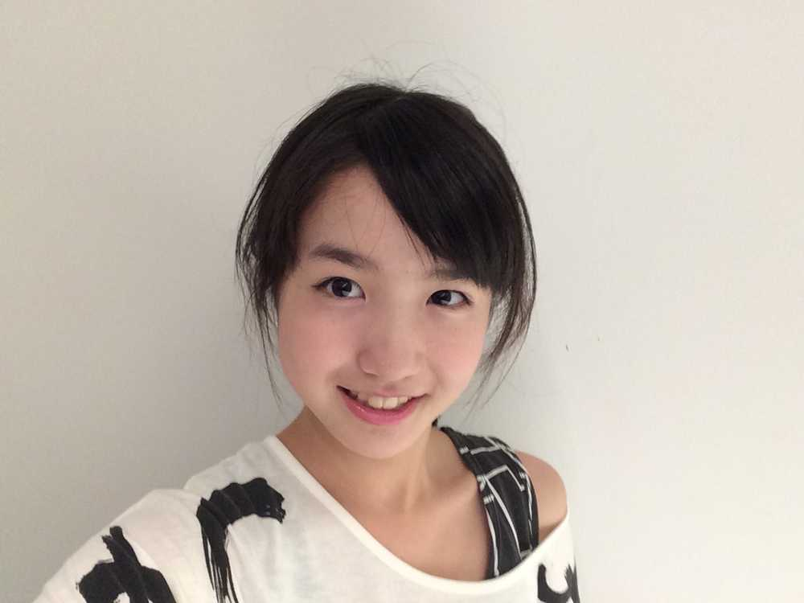

おはよう☀
ひいだよ🍓

写真見返してたら
昔の自撮りが出てきたㅋㅋㅋㅋㅋ
これは2014年の夏頃の写真らしい🤳
ってことは…
5年は経ってるね…🤔🤔🤔
どうですか？
今のわたしと比べて🙂🙃
この頃のひい
なんかお兄ちゃんに似てる気がする🤨
気のせい？？笑
でもこの頃よりは
大人っぽくなったかなって思います😊
昔の写真見てると
1人で撮ってる自撮りがほぼない💭
だいたい誰かと撮ってるなあ👩👩👧👧
こうやって昔の写真
漁るのも楽しいねえ🤩
そして今日は早起きました☺️
学校通ってるときは普通に起きてた時間を
今ではめっちゃ早起きだと感じてしまう🙃
高校生の頃は6時前には起きてた気もする。。
とりあえず遅刻せずに
ちゃんと早起きできましたよっていう報告😉
ではでは！！
今日もいい一日になりますように〜🙏🌟
오늘의 TMI💡
오랜만에 일찍 일어났어요!!
지각도 물론 안 했어용ㅎㅎㅎㅎ
이호는 보통 몇시에 일어나요???
제가 고등학생 때는 맨날 6시전에
일어났었던 것 같아요 🤔🤔🤔
근데 요즘은 그 시간에 자는 날도 있어요ㅋㅋㅋㅋ
밤낮이 바뀌었나...??ㅠㅠ
아메리카노 많이 마셔서 그런 것 같아요ㅎㅎㅎ
적당히 마셔야겠다☕️
그러면 질문 조금만 답할까~요🙂💭
Q: 집밥이 그리울 때 해결하는 방법은?
A. 엄마한테
“내가 다음에 집에 갔을 때 만들어줘!!” 라고
전화를 해요ㅎㅎㅎ
우리 엄마는 요리 너무 잘해요:)
특히 내가 좋아하는 엄마의 요리 🍳
・카레🍛
・카라아게 (닭 튀김..??)
・햄버그
・가지된장볶음
・고기감자조림
갑자기 먹고싶어졌네..ㅋㅋㅋㅋ
엄마한테 전화 해야겠다☎️
1枚目の写真から5年経った今！！笑
ばいばーい👋🏻
ひいまる🥟